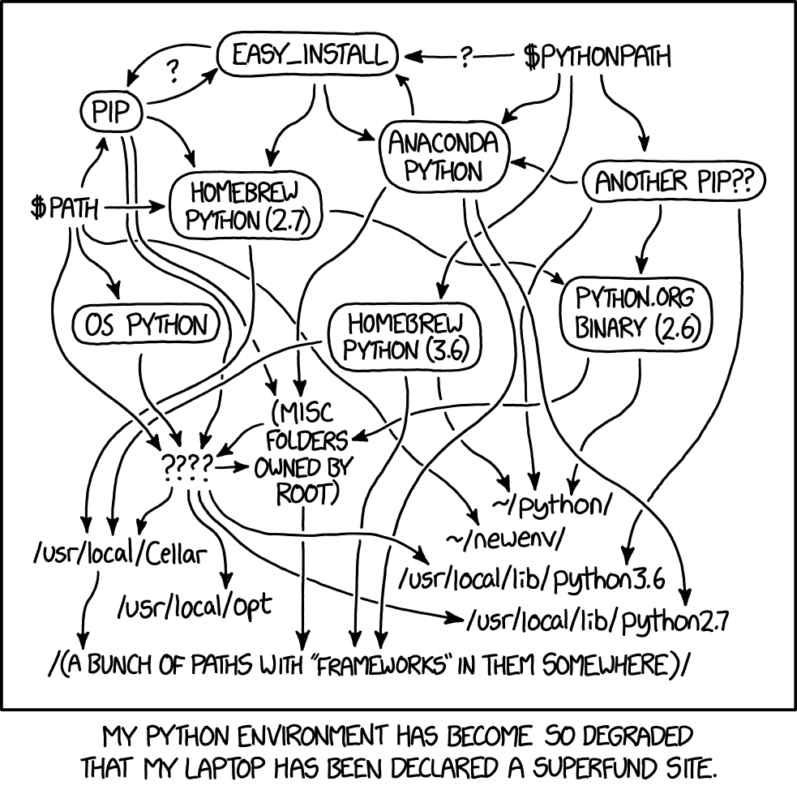

Installazione
Contents
Installazione#
Visual Studio Code#
Ci sono diversi modi per interagire con Python. In questo insegnamento useremo Jupyter Notebook. Un modo conveniente per lavorare con Jupyter Notebook è quello di usare Visual Studio Code (VSCode). VSCode è un editor di codice sorgente sviluppato da Microsoft per Windows, Linux e macOS; può essere scaricato dalla seguente pagina web.
Anaconda#
In questo insegnamento utilizzeremo diverse librerie Python. Tali librerie sono disponibili in molte versioni e tali versioni non sono sempre compatibili tra loro. Inoltre, ci sono anche molte versioni di Python e solo alcune di tali versioni sono compatibili con certe librerie. Questo punto è illustrato dalla seguente vignetta.
{kind=link}

Il problema dell’incompatibilità tra le librerie, e tra le librerie e le varie versioni di Python è uno degli aspetti più frustranti di questo linguaggio di programmazione. Per fortuna, questo problema trova una semplice soluzione quando si usano quelli che sono chiamati gli ambienti virtuali (Virtual Environments).
Un ambiente virtuale Python fornisce un ambiente isolato per una specifica versione dell’interprete Python e per un set specifico di librerie. Sul nostro computer possiamo avere (e molto spesso succede che finiamo per avere) varie versioni Python e varie versioni delle stesse librerie. Questo non è un problema se ciascuna versione dell’interprete Python e le sue associate librerie è contenuta in un ambiente virtuale isolato. In questo capitolo vedremo come creare un ambiente virtuale e come installare le librerie in un ambiente virtuale.
In Python, ci sono vari strumenti che consentono il management di ambienti virtuali (installazione di pacchetti e di una versione dell’interprete Python in un ambiente isolato). Tra questi, quello che è più facile da usare è Anaconda (conda in breve). Prima di procedere è dunque necessario installare Anaconda sul proprio computer.
PIP#
Concretamente un ambiente virtuale corrisponde ad una cartella che conterrà vari file necessari al funzionamento dell’ambiente e una copia dell’interprete Python. Dentro questa cartella potremo installare tutte le librerie con la versione che vogliamo in base al progetto su cui stiamo lavorando.
I moduli Python vengono installati da terminale, o tramite un programma chiamato pip o tramite conda. Sia pip che conda sono inclusi in Anaconda e quindi, una volta installato Anaconda, saranno disponibili sul vostro computer. Senza entrare nei dettagli, useremo conda creare, attivare e disattivare l’ambiente virtuale, e pip per l’installazione dell’interprete Python e delle librerie Python.
Ambienti virtuali Python#
Dopo avere installato Anaconda, procediamo con l’installazione di Python e delle librerie necessarie. Le istruzioni seguenti devono essere date a terminale. Si noti che sono state testate su un sistema operativo MacOS.
Per prima cosa è necessario uscire dall’ambiente virtuale in cui ci troviamo:
conda deactivate
Creiamo ora un nuovo ambiente virtuale chiamato pymc (il nome è arbitrario). Nell’istruzione seguente specifico che tale ambiente deve contentere la libreria ipython necessaria per usare Jupyter Notebook in VSCode.
conda create -n "pymc" ipython
Quando vi viene chiesto se procedere, rispondiamo di sì:
Proceed ([y]/n)? y
Attiviamo ora l’ambiente virtuale che abbiamo creato:
conda activate pymc
Procediamo all’installazione di bambi (“BAyesian Model-Building Interface”; io ho usato la versione dev) – si vedano anche le istruzioni sulla pagina web della libreria. L’installazione di bambi comporta, in automatico, anche l’istallazione di quasi tutte le altre librerie che ci servono:
pip install git+https://github.com/bambinos/bambi.git
Oltre a bambi, io ho anche installato le seguenti librerie:
pip install watermark
pip install statsmodels
pip install -U jupyter-book
pip install sphinx-exercise
pip install graphviz
pip install seaborn
Molto probabilmente, le librerie jupyter-book e sphinx-exercise non vi serviranno e potete evitare di installarle.
Lavorare con VSCode#
A questo punto siamo pronti per iniziare a lavorare in VSCode. Quando apriamo un file .ipynb, dobbiamo sempre ricordarci di selezionare l’ambiente virtuale.
Tip
Per selezionare un ambiente virtuale, da Command Palette (⇧⌘P) usiamo l’istruzione Python: Select Interpreter. Oppure, più semplicemente, possiamo cliccare sull’icona in alto a destra (sotto ⚙️) di VSCode. Nel mio caso, l’ambiente virtuale deve essere pymc (ma può essere qualunque altro nome abbiate scelto per l’ambiente virtuale che contiene bambi).
Altri comandi utili#
Aggiungo qui sotto alcune istruzioni che possono risultare utili. Ricordo che un ambiente virtuale è contenuto in una singola cartella. Per vedere l’indirizzo di tale cartella usiamo:
conda info -e
Ciò rende molto facile rimuovere completamente un ambiente virtuale. Per fare questo, supponendo che l’ambiente virtuale si chiami my_env, usiamo:
conda env remove -n my_env
Se vogliamo solo rimuovere una libreria dall’ambiente virtuale (supponiamo si chiami package_name), usiamo:
conda remove package_name